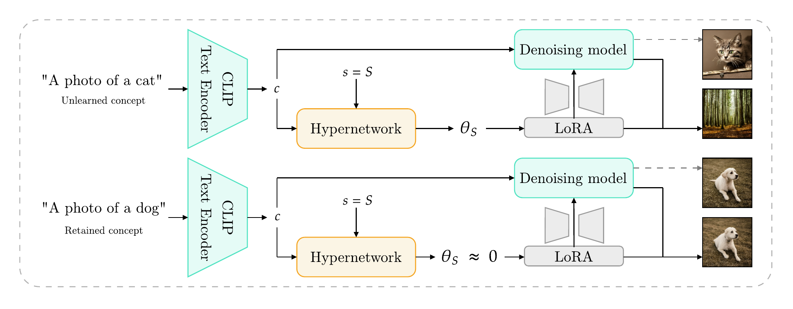
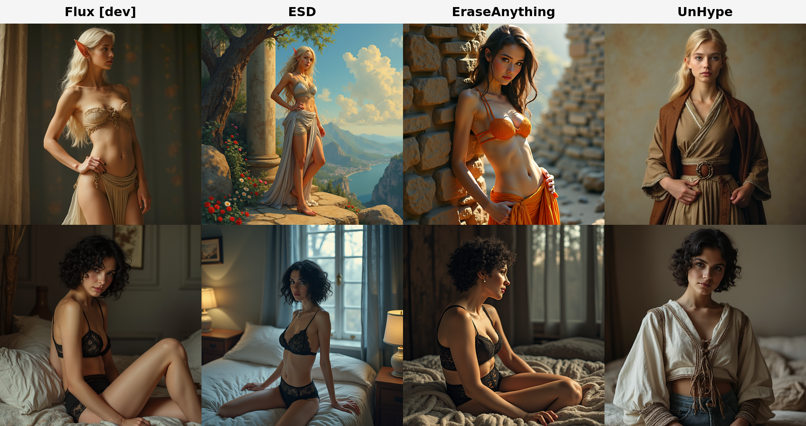

Abstract
Recent advances in large-scale diffusion models have intensified concerns about their potential misuse, particularly in generating realistic yet harmful or socially disruptive content. This challenge has spurred growing interest in effective machine unlearning, the process of selectively removing specific knowledge or concepts from a model without compromising its overall generative capabilities. Among various approaches, Low-Rank Adaptation (LoRA) has emerged as an effective and efficient method for fine-tuning models toward targeted unlearning. However, LoRA-based methods often exhibit limited adaptability to concept semantics and struggle to balance removing closely related concepts with maintaining generalization across broader meanings. Moreover, these methods face scalability challenges when multiple concepts must be erased simultaneously.
To address these limitations, we introduce UnHype, a framework that incorporates hypernetworks into single- and multi-concept LoRA training. The proposed architecture can be directly plugged into Stable Diffusion as well as modern flow-based text-to-image models, where it demonstrates stable training behavior and effective concept control. During inference, the hypernetwork dynamically generates adaptive LoRA weights based on the CLIP embedding, enabling more context-aware, scalable unlearning. We evaluate UnHype across several challenging tasks, including object erasure, celebrity erasure, and explicit content removal, demonstrating its effectiveness and versatility.
How it works
Most LoRA-based unlearning methods bake one adapter per concept and freeze it after training. UnHype takes a different route: a small hypernetwork that generates the LoRA weights on the fly, conditioned on the CLIP embedding of whatever you want to erase.

The trick is the semantic switch: for unlearned concepts the hypernetwork outputs a strong LoRA that suppresses generation; for everything else it outputs near-zero weights and the base model passes through untouched. No external classifier, no input filter — the switch is baked into the weights.
Training uses two losses:
- a removal loss that gradient-matches the hypernetwork's trajectory to the analytical SGD step of the unlearning task (the Hypernet Fields formulation);
- a retention loss that, for any retained concept cretain, forces Hφ(cretain, s) ≈ Hφ(cretain, 0) at every step s, holding the LoRA output near zero so unrelated concepts pass through unchanged.
Because the hypernetwork conditions on a continuous CLIP embedding rather than a fixed concept ID, the same trained model handles synonyms (forget bird and you also forget eagle and owl) and scales to many concepts in one network.
Object erasure (CIFAR-10)
Object erasure is the cleanest test of precision: can a method remove one class without dragging down everything around it? Following the standard protocol, we erase three CIFAR-10 classes — airplane, ship, and bird — one at a time on Stable Diffusion 1.4. Each is scored with a composite Ho that folds together how well the target is gone (efficacy), how intact the other nine classes stay (specificity), and whether the erasure carries over to synonyms like jet or eagle (generality). Higher is better.
| Method | Airplane | Ship | Bird | Average |
|---|---|---|---|---|
| FMN | 6.13 | 3.70 | 1.38 | 3.74 |
| AC | 6.11 | 4.97 | 1.24 | 4.11 |
| SLD-M | 13.69 | 24.99 | 23.31 | 20.66 |
| UCE | 64.09 | 89.44 | 90.18 | 81.24 |
| ESD-x | 74.98 | 73.99 | 76.17 | 75.05 |
| ESD-u | 90.57 | 86.33 | 83.98 | 86.96 |
| MACE | 92.03 | 92.61 | 90.39 | 91.68 |
| UnHype (ours) | 94.59 | 94.44 | 92.52 | 93.85 |
Composite Ho (↑) per erased class on Stable Diffusion 1.4 — harmonic mean of efficacy, specificity, and synonym generality. Best per column in bold.
UnHype takes every column — 93.85 on average, ahead of MACE (91.68) — and the gap is widest on generality: because the hypernetwork conditions on a continuous CLIP embedding rather than a fixed class ID, erasing bird also catches owl and warbler, not just the literal training prompt.
Unlearning on Flux
Stable Diffusion is the established benchmark for concept erasure — most prior methods were designed around its U-Net + classifier-free guidance setup. Flux is newer (a state-of-the-art flow-matching model) and the territory is much less explored, so it's a useful stress test for whether unlearning methods scale to larger, high-resolution architectures. Because Flux uses distilled guidance rather than iterative CFG, there's no conditional branch to selectively target; UnHype's generated weights θS apply directly to Flux's value-projection and output-transformation layers across the whole sampling process.

NudeNet detections on I2P (Flux) — lower is better
The next-best method (UCE) sits at 173 detections. UnHype lands at 32 — more than 5× fewer than anything else — while keeping FID and CLIP scores comparable to the Flux baseline.
Nudity erasure on Stable Diffusion
Same benchmark as before — 4,703 I2P prompts, NudeNet detection at threshold 0.6 — but now on Stable Diffusion 1.4. This is the territory where most existing methods were built and tuned, so the bar is high.
NudeNet detections on I2P (SD 1.4) — lower is better
UnHype reaches 8 total detections — the strongest result on this benchmark, edging out STEREO (9) and well ahead of SAeUron (18). And it gets there cheaply: SAeUron leans on a long-running sparse-autoencoder pretraining stage (24+ hours), whereas training UnHype for nudity erasure takes about 3 hours.
Defending against adversarial attacks
A concept eraser is only as good as its weakest adversarial prompt. We stress-test UnHype with two attacks built to coax the erased nudity back: UnlearnDiffAtk, which optimizes the text embedding to maximize the chance of regenerating the concept, and Ring-A-Bell, which assembles adversarial prompts by retrieving and stitching together concept-related tokens. Following the standard protocol, we push 95 adversarial prompts from I2P through each method and report the Attack Success Rate (ASR) — the fraction of generations NudeNet still flags as NSFW. We also list the no-attack rate and MS-COCO FID/CLIP, so it's clear the robustness isn't being bought with image quality.
| Method | No attack ↓ | UnlearnDiffAtk ↓ | Ring-A-Bell ↓ | FID ↓ | CLIP ↑ |
|---|---|---|---|---|---|
| SD v1.4 (baseline) | 74.73 | 90.27 | 90.52 | 14.13 | 31.33 |
| UCE | 20.00 | 70.52 | 35.78 | 14.49 | 31.32 |
| RECE | 4.21 | 53.08 | 9.47 | 14.90 | 30.94 |
| ESD | 3.15 | 43.15 | 35.79 | 14.49 | 31.32 |
| MACE | 6.31 | 41.93 | 5.26 | 13.42 | 29.41 |
| RACE | 3.15 | 30.68 | 11.57 | 20.28 | 28.57 |
| AC | 1.05 | 25.80 | 89.47 | 14.13 | 31.37 |
| STEREO | 1.05 | 4.21 | 2.10 | 15.70 | 30.23 |
| AdvUnlearn | 1.05 | 3.40 | 0.00 | 15.84 | 29.27 |
| UnHype (ours) | 0.00 | 0.00 | 1.05 | 13.45 | 31.43 |
Attack Success Rate (%, ↓) under UnlearnDiffAtk and Ring-A-Bell over 95 I2P adversarial prompts; "No attack" is the clean NSFW rate; FID/CLIP on MS-COCO. Ours highlighted; best per column in bold. Baselines from STEREO (Srivatsan et al.).
UnHype is the only method that drives UnlearnDiffAtk to a 0% success rate while keeping the base model's image quality — the highest CLIP score in the table and an FID within 0.03 of the best. The other genuinely robust methods, AdvUnlearn and STEREO, buy that robustness with fidelity: FID climbs to ~15.7–15.8 and CLIP slips below 30.3. Ring-A-Bell is the one attack that still lands occasionally (1.05%), but even there UnHype is among the strongest defenders. Why it holds: the semantic switch conditions on the pooled CLIP embedding, so token-level perturbations don't push the generated LoRA out of the suppression regime.
Celebrity erasure
The hardest test for scalability: erase 100 named celebrities while keeping 100 other public figures intact — all from a single trained model. Per-concept methods like MACE have to fine-tune one set of weights per identity; UnHype handles all 200 with one CLIP-conditioned hypernetwork that generates per-prompt LoRA weights, routing the erasure identity by identity so the targets and the bystanders don't interfere. Faces are scored with the GIPHY Celebrity Detector.
Composite score Ho on 100-celebrity erasure — higher is better
UnHype lands a composite Ho of 92.48, ahead of strong recent erasers like TRCE (89.85) and MACE (88.54). It does this while leaving only 0.46% of erased identities still recognizable and posting the highest CLIP score of the group — and, again, all 100 targets are handled by one hypernetwork rather than 100 separate adapters.
BibTeX
@article{wojcik2026unhype,
title = {UnHype: CLIP-Guided Hypernetworks for Dynamic LoRA Unlearning},
author = {W{\'o}jcik, Piotr and Petrenko, Maksym and Gromski, Wojciech and Spurek, Przemys{\l}aw and Zieba, Maciej},
journal = {arXiv preprint arXiv:2602.03410},
year = {2026}
}